Muebles de baño.
En nuestro showroom – tienda de muebles para baño en Barcelona, dispones de una amplia selección de marcas y modelos de mobiliario de baño moderno y actual, que podrás personalizar en función de las necesidades de tu proyecto, si eres profesional, o tu cuarto de baño particular.
Nuestro empeño es ofrecerte estética, calidad y funcionalidad, y si también buscas la personalización de tu cuarto de baño hasta el más mínimo detalle, con el equipo del departamento de interiorismo podrás diseñar tu mueble a medida.
Muebles de baño de madera, de corian, lacados, en cualquier color RAL… las posibilidades son realmente muy amplias.
Sigue leyendo para conocer las últimas novedades en mobiliario para baños, ven a verlas en Gran Vía 494 (Barcelona), o revisa las publicaciones en nuestras redes sociales y blog.
Y si lo que buscas no está en exposición, lo buscamos en la Bagnoteca, nuestra biblioteca de catálogos.
Novedades 202644

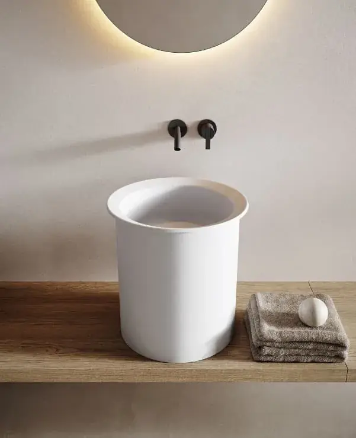
Muebles de baño¿Por qué casi todos los muebles de baño suspendidos dejan ver dónde empieza y acaba cada pieza?
Las juntas. Los remates. Ahí se nota siempre.
Ergo.23 no las tiene. Rexa Design lo hace íntegro en Corian®: una sola pieza, ligera, sin fisuras entre lleno y vacío.

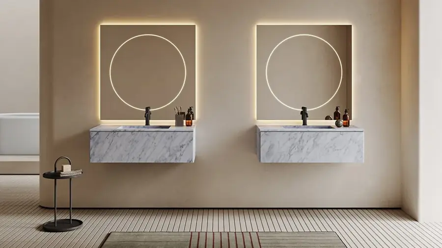
Muebles de baño¿Por qué el mármol casi siempre es un detalle del mueble de baño y no el protagonista?
En mobiliario modular, el mármol suele reducirse a la encimera o a un remate puntual. Que sea el frente entero, y que además se ajuste a medidas concretas, es otra historia.
Strato Mármol lo cambia. En esta colección de Inbani, el frente de cada módulo se configura siempre en mármol, con cuatro acabados disponibles: Pietra Grey, Carrara Blanco, Marquina Negro y Beige Mármol.
El cuerpo puede ir en laca mate, maderas o cualquiera de los mármoles.
Cada pieza procede de un único bloque, así que las vetas varían de un módulo a otro.Madera cálida en el baño sin romper la estética contemporánea.

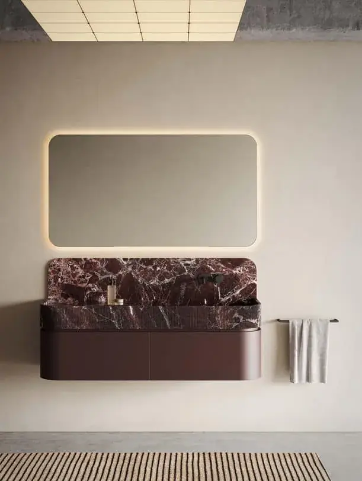
Muebles de bañoMobiliario para baño Ella – Inbani
Cuando el objetivo es conseguir un baño ordenado y funcional, integrar correctamente las distintas necesidades de uso resulta tan importante como la estética final.
La colección Ella reúne superficie de apoyo, almacenaje y espejo en una única composición, simplificando la planificación del espacio y reduciendo la necesidad de incorporar elementos independientes.
La combinación de mármol y madera permite equilibrar la presencia de ambos materiales, aportando textura y calidez sin sobrecargar visualmente el conjunto.
Sus volúmenes curvos suavizan la geometría de la pieza y favorecen soluciones de larga vigencia estética, especialmente adecuadas para proyectos residenciales que buscan funcionalidad y atemporalidad.
- Muebles de baño
Un mueble de baño puede limitarse a guardar cosas, o puede marcar el ritmo del espacio.
Los módulos de almacenaje suelen repetirse sin generar ningún punto de atención.
Patricia Urquiola rompe esa norma en Balcoon, para Duravit: acabados lisos o en terrazo texturizado, con módulos asimétricos que introducen ritmo y combinaciones cromáticas contrastadas sin perder calidez
Te mostramos las combinaciones si quieres verlas de cerca.
- Muebles de baño
Pedestales para lavabos - Bathco (Novedad 2026)
Los pedestales Bathco resuelven lavabos exentos con una base estable y bien proporcionada, manteniendo el espacio despejado y sin recurrir a mueble bajo.
Están fabricados en porcelana, acero inoxidable o bambú, materiales de producción sostenible que garantizan resistencia y facilidad de limpieza.
La colección ofrece distintas alturas y acabados para adaptarse a lavabos de diferentes formatos. Algunas de las piezas incluyen repisas abiertas que aportan apoyo funcional sin añadir volumen ni interferir en la lectura del conjunto.
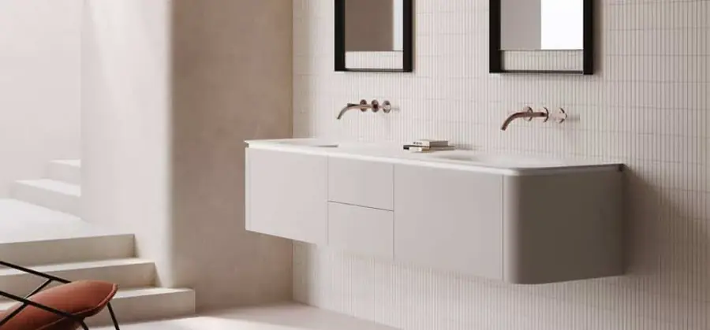
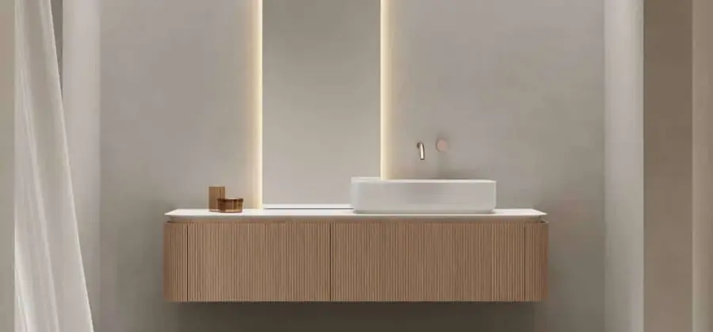
Muebles de baño¿Se puede ampliar el almacenaje de un baño sin tocar la estructura del mueble?(Novedad 2026)
Normalmente, más capacidad significa rehacer el mueble entero.
Galiano, de Butó, lo evita con líneas curvas y proporciones equilibradas, laterales extraíbles opcionales, lavabo sobre encimera de gran formato y espejo retroiluminado en arco, combinando acabados sin sobrecargar el conjunto.
Si el espacio es ajustado, pero necesitas capacidad, te enseñamos cómo se configura.
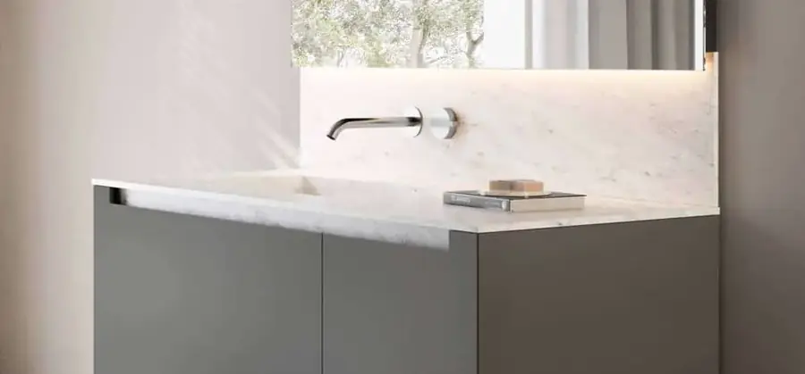
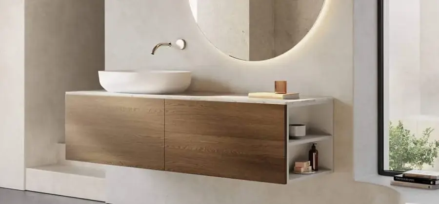
Muebles de bañoMobiliario de baño modular Colección Pro HQ - Butó (Novedad 2026)
Pro HQ es un sistema modular de mobiliario de baño concebido para resolver proyectos con requerimientos específicos de medida, almacenaje y configuración.
Su estructura permite combinar distintos módulos base, columnas y soluciones suspendidas, adaptándose a geometrías complejas o espacios limitados.
La variedad de dimensiones y acabados facilita la coherencia con encimeras y lavabos, manteniendo continuidad formal.
Una colección orientada a prescripción, que permite ajustar proporciones, capacidad y distribución sin alterar el lenguaje arquitectónico del conjunto.
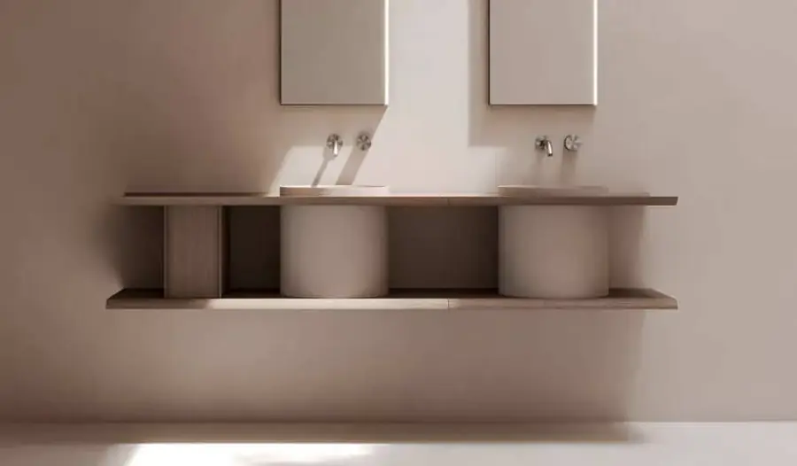
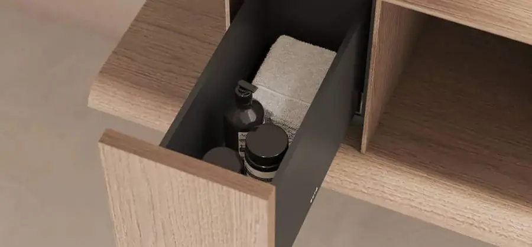
Muebles de bañoMuebles para baño colección Tabu - Butó (Novedad 2026)
Un sistema que apuesta por la geometría circular para suavizar la rigidez ortogonal del baño.
La transición continua entre encimera y lavabo elimina juntas vistas, genera piezas compactas facilitando la limpieza y reforzando la pureza visual
Resulta idóneo como pieza exenta en proyectos como suites o baños de cortesía, donde el volumen actúa como eje del espacio.
Su diseño permite integrar almacenamiento de forma orgánica, sin complicar la instalación, optimizando la ergonomía y la fluidez en zonas de paso.
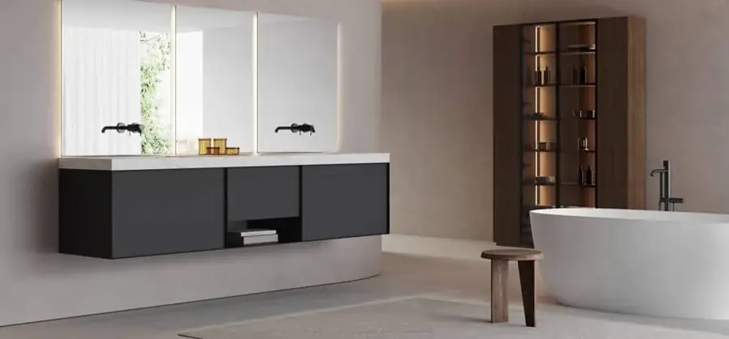
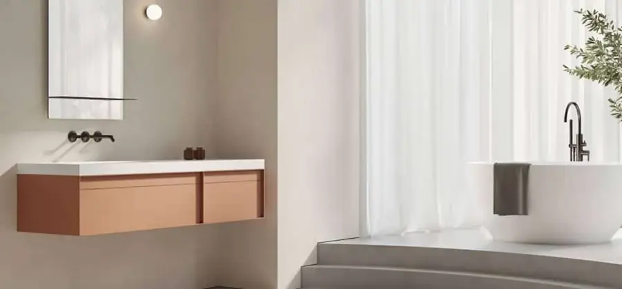
Muebles de bañoMuebles baño colección Kairu - Butó
Una colección que estructura el espacio mediante un lenguaje volumétrico de inspiración brutalista, ideal para proyectos que buscan una fuerte presencia arquitectónica.
El contraste entre sus aristas precisas y superficies sinuosas permite una integración limpia en ambientes de diseño contemporáneo.
Al ser un sistema modular integral —incluyendo almacenamiento, espejos y lavabos—, facilita la coordinación estética en promociones residenciales o sector contract.
Su diseño aporta presencia, rigor geométrico y funcionalidad versátil sin comprometer la pureza formal.
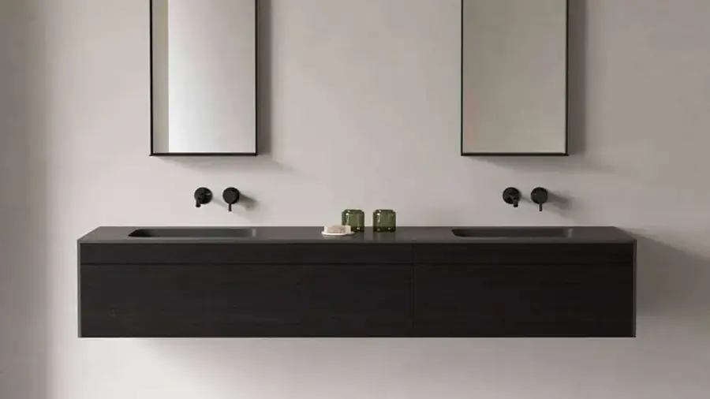
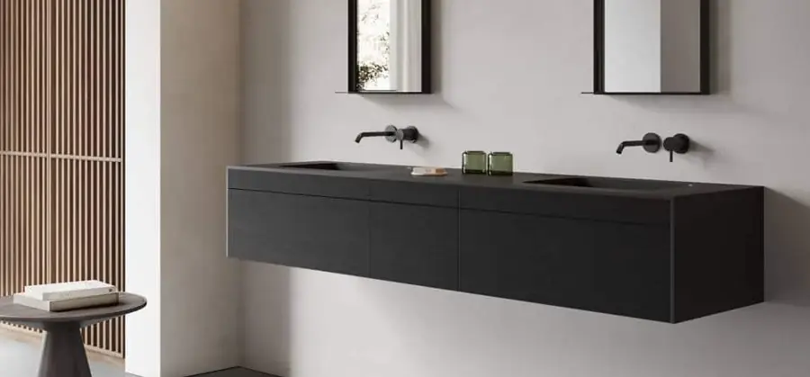
Muebles de bañoColección Mueble para baño Isho - Butó
Una colección que facilitan diluir la frontera entre el área de aguas y la zona de descanso mediante una integración cromática absoluta.
Al permitir personalizar y unificar el acabado de tapa, costados y encimera, se generan volúmenes monolíticos que reducen el ruido visual en el espacio.
Una solución técnica idónea para suites donde el mobiliario de baño debe convivir con texturas residenciales, aportando una calidez estética que no compromete la durabilidad necesaria en ambientes húmedos.
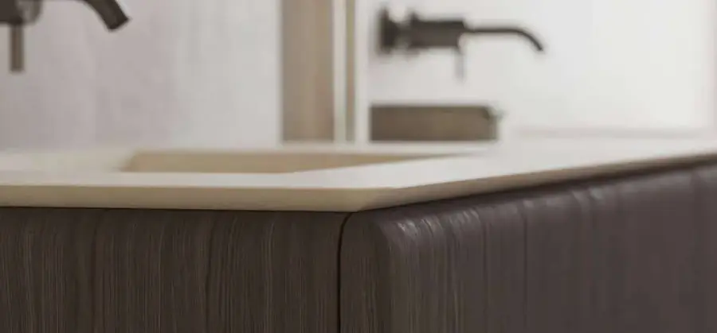
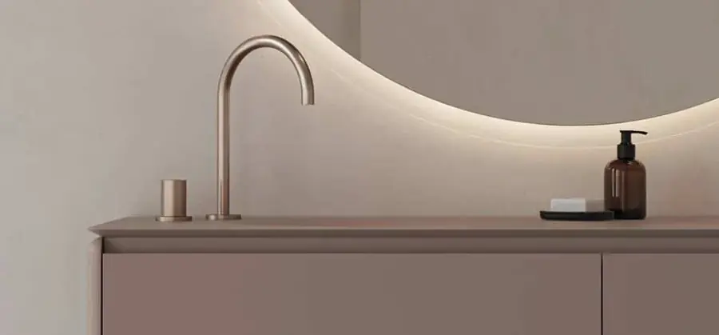
Muebles de bañoColección muebles de baño Bold - Muebles de baño Butó
Nueva línea de mobiliario para baño con frentes curvos y laterales redondeados que resuelven el volumen de forma continua, evitando aristas y reforzando la lectura unificada del conjunto.
La tapa a inglete enfatiza la precisión en los encuentros y aporta una imagen compacta, orgánica.
El sistema permite distintas combinaciones de acabados y encimeras en tonos suaves, creando un ambiente amable y armonioso
Una colección centrada en el tratamiento del volumen y la suavidad geométrica como elementos definidores del diseño.
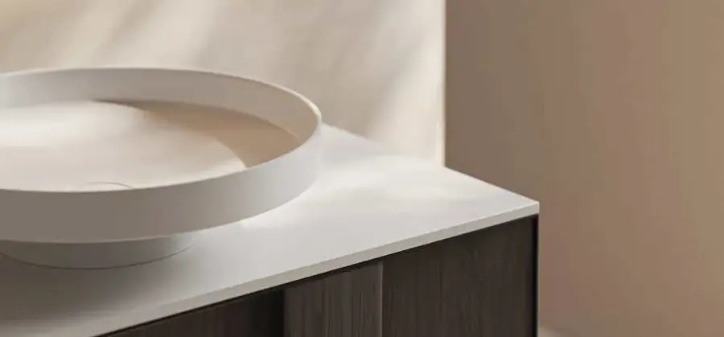
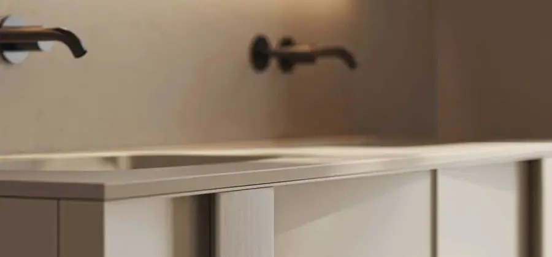
Muebles de bañoMuebles baño colección Ribon - Butó
Colección definida por una composición de planos superpuestos que generan profundidad mediante sombras y cambios de nivel.
A través de la selecta elección de sus materiales, Ribon define una estética elegante y serena donde los acabados y sus líneas limpias aportan equilibrio y calma.
El tirador se integra en el propio volumen mediante una geometría continua que resuelve la apertura de forma ergonómica. Detalles que elevan la experiencia cotidiana.
Una propuesta llena de matices centrada en la superposición y la precisión constructiva.
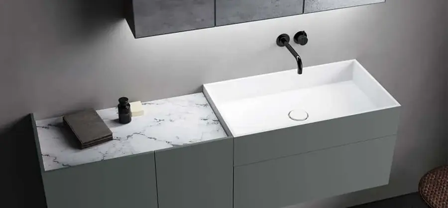
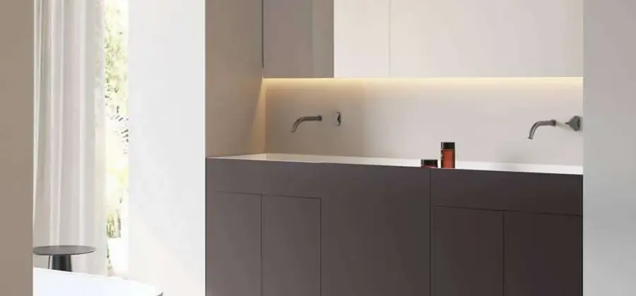
Muebles de bañoMuebles de baño colección Camira - Butó
Camira es una colección de mobiliario de baño versátil, diseñada para adaptarse a proyectos con distintas necesidades de espacio gracias a sus configuraciones suspendidas o al suelo.
Destaca por la combinación de materiales y por la posibilidad de integrar iluminación y accesorios funcionales.
Concebida también para soluciones de fondo reducido, permite optimizar la distribución sin renunciar a capacidad de almacenamiento.
Su planteamiento modular facilita composiciones equilibradas y adaptables, adecuadas tanto para baños reducidos como para espacios de mayor dimensión.
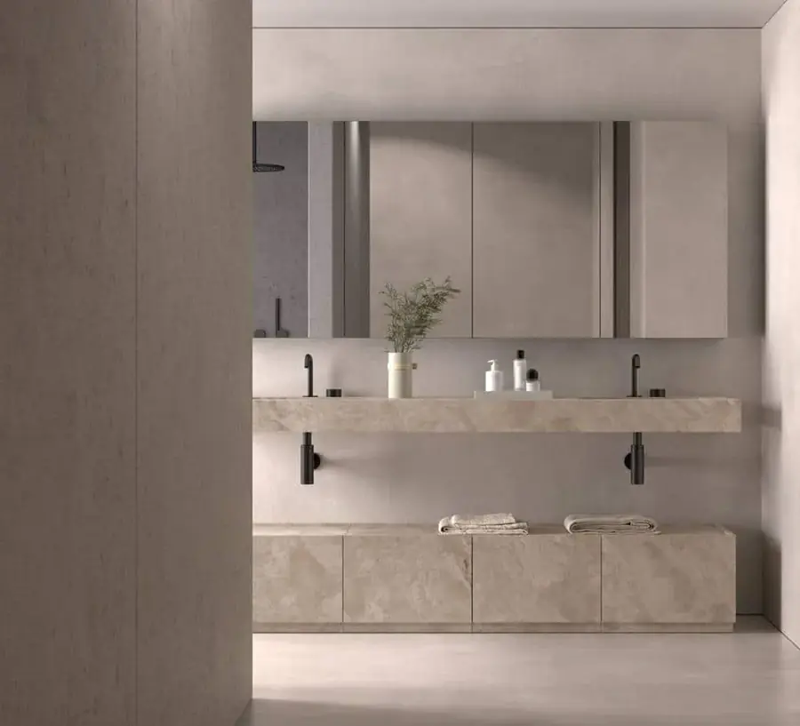
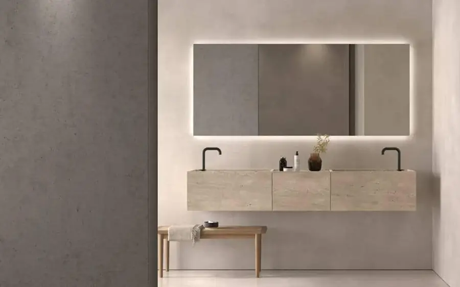
Muebles de bañoElegantes muebles de baño colección Halter - Madero Atelier
Madero Atelier cautiva con su exclusiva colección para baños Halter, una combinación de muebles diseñados con los materiales más sofisticados del mercado, trabajados al detalle y pensados para dar un toque único a la estancia.
Sin renunciar a la comodidad, Halter representa la elegancia y la estética. La belleza de sus acabados logra crear un ambiente sereno y en armonía, proporcionando una experiencia sensorial placentera.
La colección, diseñada en mármol, piedra y madera, permite combinar varios módulos creando espacios genuinos que se adaptan a todas las necesidades y preferencias.
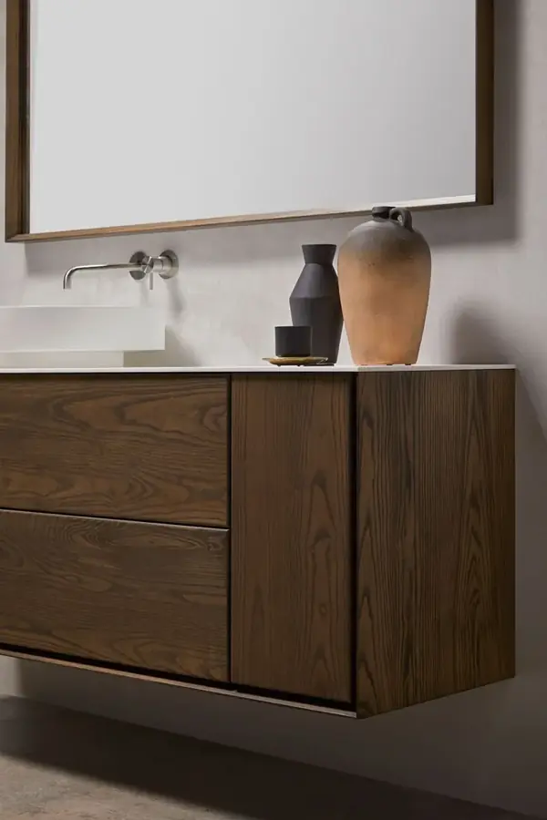
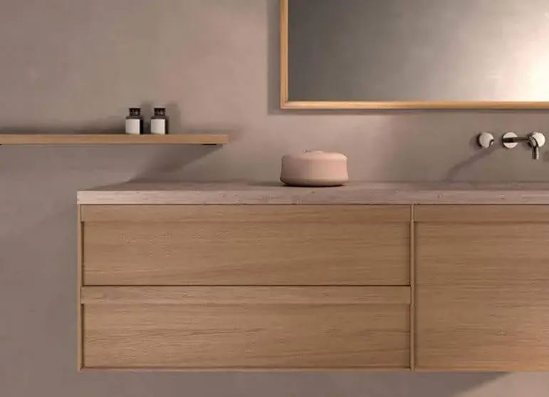
Muebles de bañoMuebles para el baño Easy - Mapini
Easy renueva su línea de muebles incorporando laterales redondeados y un marco frontal fino que redefine el volumen del mueble.
Esta solución facilita la integración en baños que buscan líneas amables, continuidad visual y un toque arquitectónico.
El marco del mueble—a juego o en contraste con el mismo— permite trabajar combinaciones de materiales y texturas según el proyecto.
Una propuesta versátil para composiciones suspendidas que priorizan serenidad, mantenimiento sencillo y una estética contemporánea de perfil “soft”.
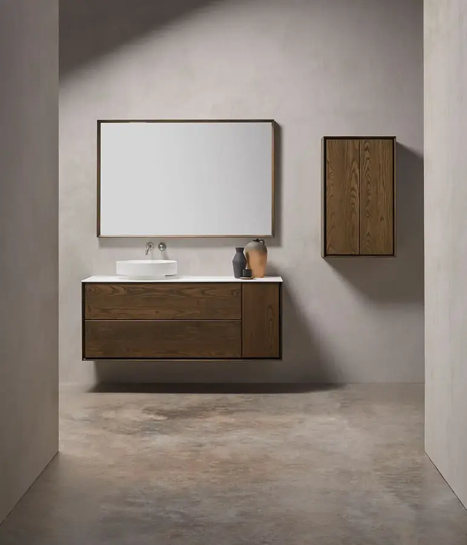
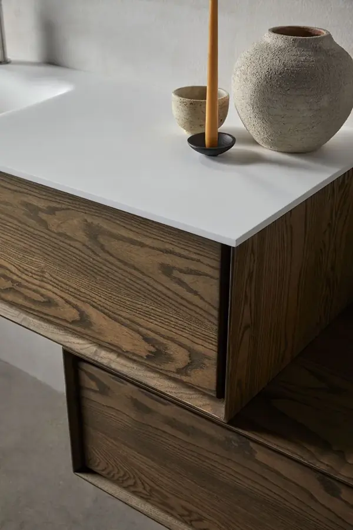
Muebles de bañoMuebles baño de fresno macizo Suró - Naxani
Suró reinterpreta el mueble en fresno macizo mediante barnices con tintes especiales que enfatizan la veta de la madera con técnicas artesanales.
Smoke (carácter fuerte y alto contraste), Quemado (autenticidad e inspiración en el Shou Sugi Ban), Honey (tono cálido, natural y uniforme) y Dark (sobriedad e intensidad moderada).
La colección se ofrece en dos configuraciones: Suró 31, suspendido y ligero, y Suró 64, con mayor capacidad de almacenaje.
Una solución robusta y atemporal para baños que priorizan materialidad y textura.
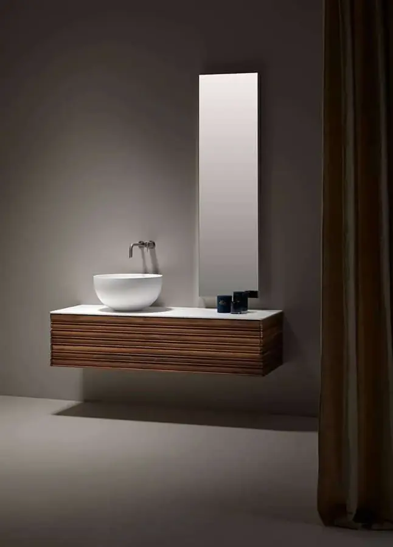
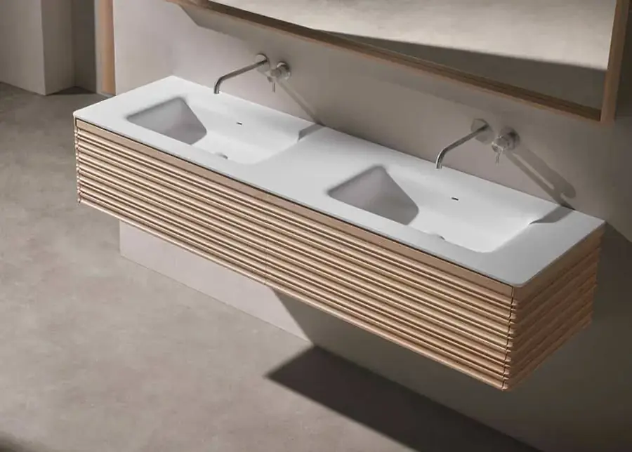
Muebles de bañoMobiliario para baño suspendidos de madera maciza Unda - Naxani
Unda es una colección de muebles suspendidos fabricados en madera maciza de nogal, fresno y maple, trabajada con surcos irregulares que recorren todo el mueble en forma de onda, generando textura y continuidad visual.
Disponible en medidas de 80 a 240 cm con formato rectangular, con cajón pull y cierre silencioso. Su acabado natural con barniz incoloro resalta la veta y el cromatismo de la madera.
Una pieza con mucha personalidad, inspirada en las formas del mar y el agua, pensada para baños con presencia y carácter material.
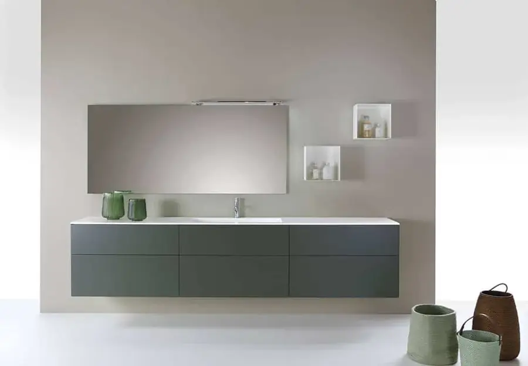
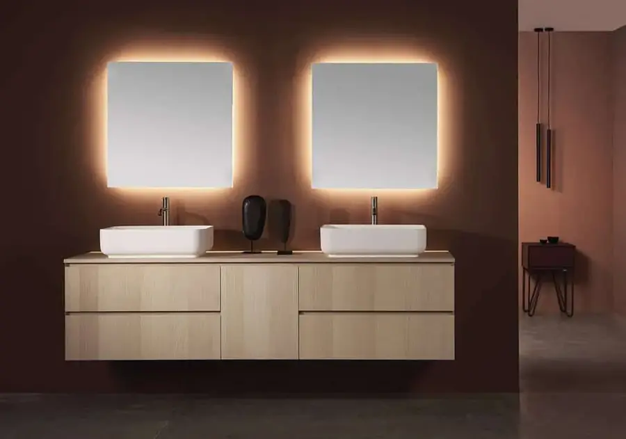
Muebles de bañoMuebles de baño que optimizan la ergonomía Randa – Mapini
Randa evoluciona hacia un modelo más sofisticado, incorporando laterales curvados que suavizan el contorno del mueble y mejoran la transición entre frentes y costados.
Puede incluir ranurado vertical en sus superficies, aportando textura y mayor definición visual. En la versión Miter, la encimera elevada actúa como tirador oculto y facilita la apertura.
Su diseño está pensado para optimizar la ergonomía y ofrecer soluciones modulares adaptables a diferentes configuraciones de baño y accesorios seleccionados especialmente para esta nueva línea.
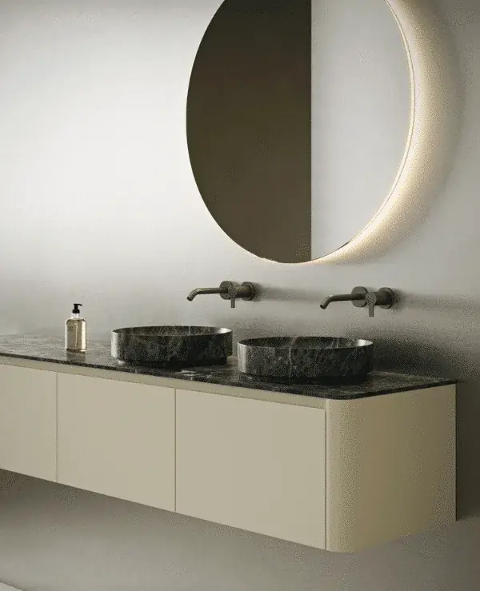
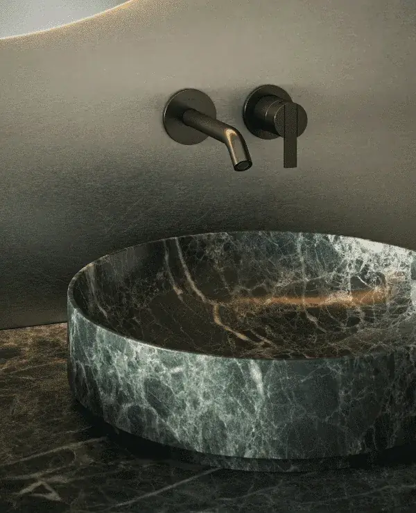
Muebles de bañoVersatilidad y ergonomía para baños Fuse - Inbani
Programa modular para baño con mobiliario suspendido y tapas de diseño curvado que aportan continuidad visual y ergonomía.
Disponible con lavabo integrado o encimera independiente, permite configurar composiciones adaptadas al espacio y nivel de almacenamiento requerido.
Ofrece una paleta amplia de 60 lacas y 20 maderas, ideal para coordinar acabados dentro del proyecto.
Fuse combina precisión constructiva, versatilidad estética y materiales de altas calidades, respondiendo a las necesidades de interioristas que buscan proyectos con personalidad y funcionalidad.
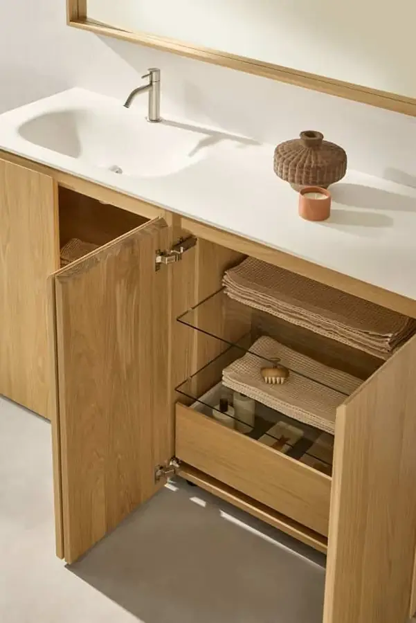
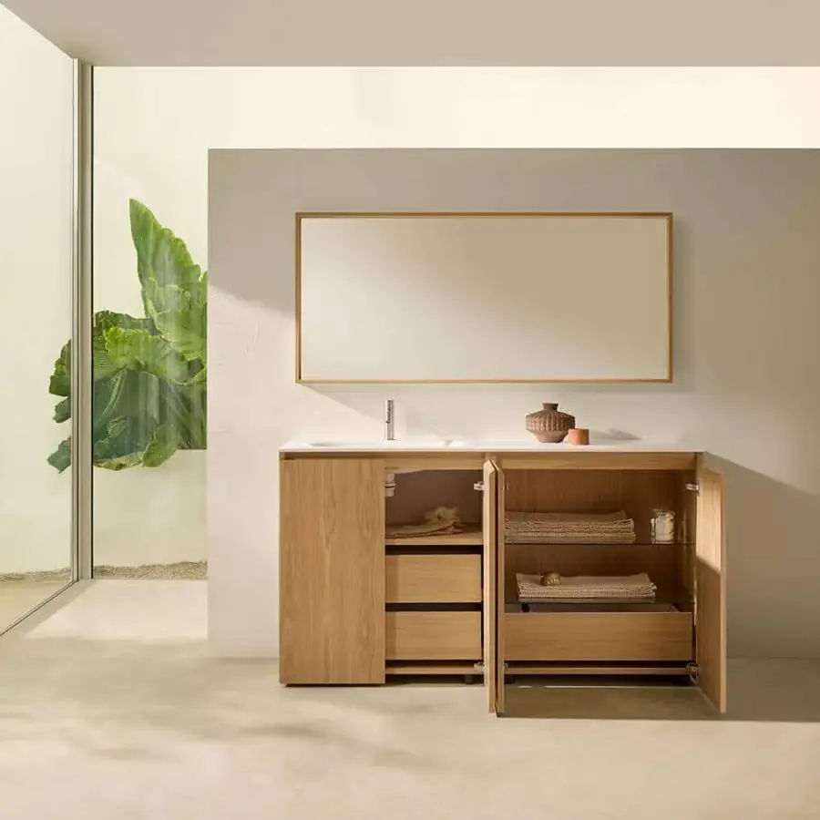
Muebles de bañoMuebles de baño Gentle - Naxani
Colección de muebles a suelo fabricada en nogal o roble, pensada para proyectos que requieren mayor capacidad de almacenamiento.
Disponible en anchos de 40, 60, 70 y 80 cm, ofrece módulos configurables con 1 o 2 puertas, estantes de cristal y cajones interiores con sistema pull y cierre silencioso.
Elevados sobre patas ocultas regulables, aporta ligereza visual al espacio a la par que funcionalidad.
Los frentes ingletados a 45° refuerzan la elegancia del conjunto, ofreciendo continuidad estética sin necesidad de tiradores.
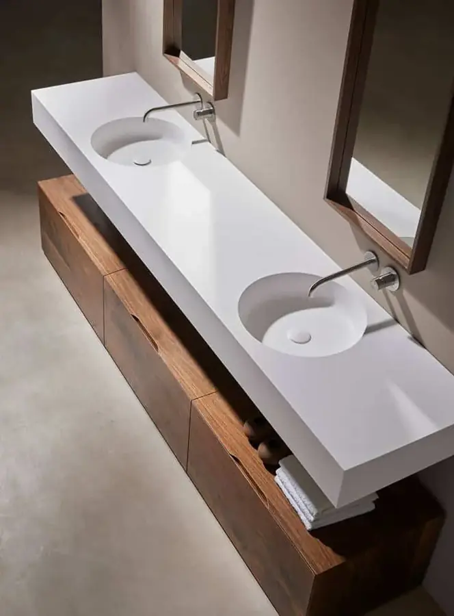
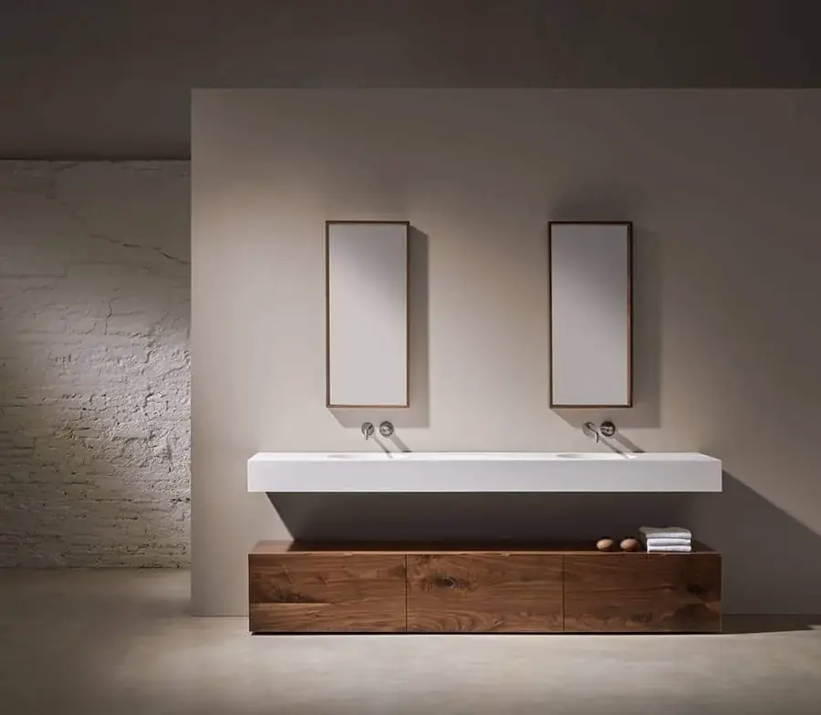
Muebles de bañoMuebles de baño Modul – Naxani
Colección de mobiliario para baño concebida para combinar con lavabos suspendidos de la marca.
Naxani está disponible en nogal o roble macizo y en tablero MDF hidrófugo con recubrimiento de microcemento.
Los módulos se componen de cajones con sistema pull y quedan ligeramente elevados del suelo mediante patas ocultas.
Con medidas desde 80 cm hasta composiciones de 240 cm, facilita soluciones versátiles con aspecto natural para proyectos de baño que prioricen almacenamiento.
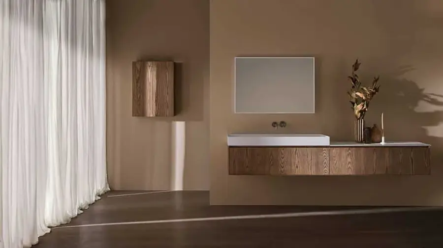
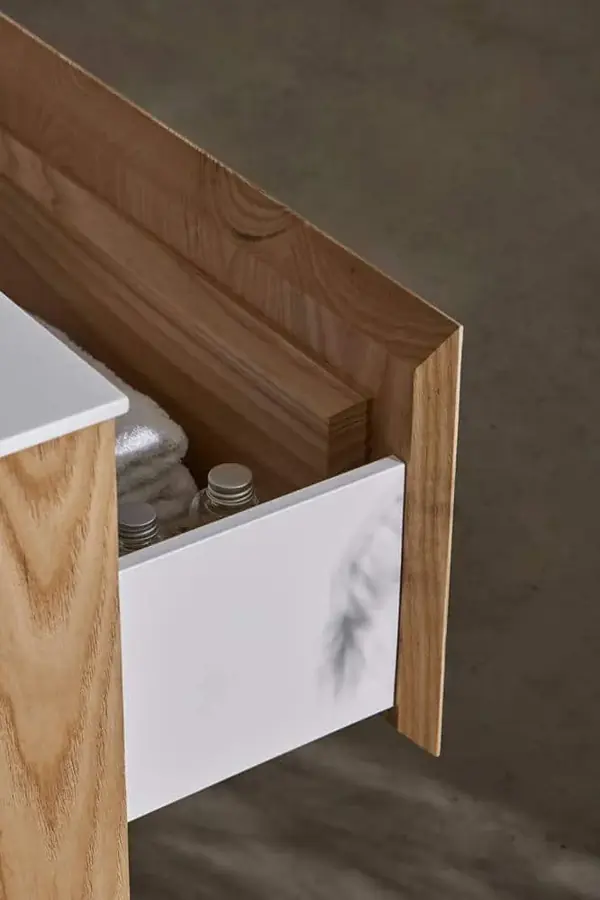
Muebles de bañoMueble de baño Materia - Naxani
Naxani pone el foco en la textura real y calidad de los materiales con su nueva colección para baño “Materia”.
La madera maciza de Fresno, tratada de forma artesanal para acentuar la veta en vertical—simulando la disposición natural del tronco—, aporta durabilidad, calidez y un punto orgánico al baño.
Es la elección perfecta para proyectos que buscan mobiliario con sensibilidad táctil y una estética minimalista donde la materia es el elemento diferenciador, garantizando una pieza central robusta y con personalidad.
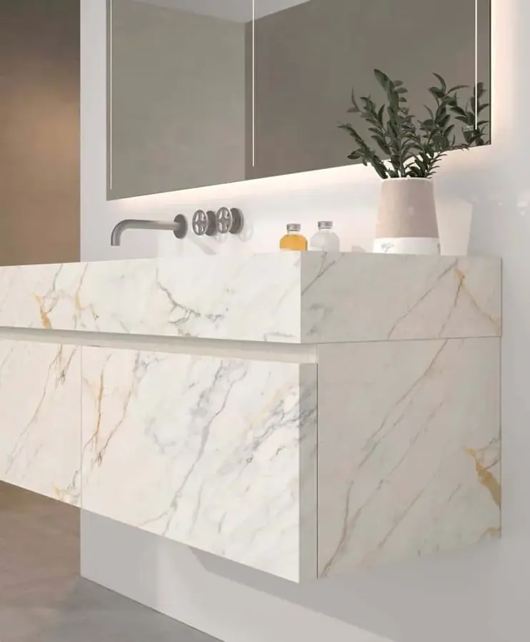
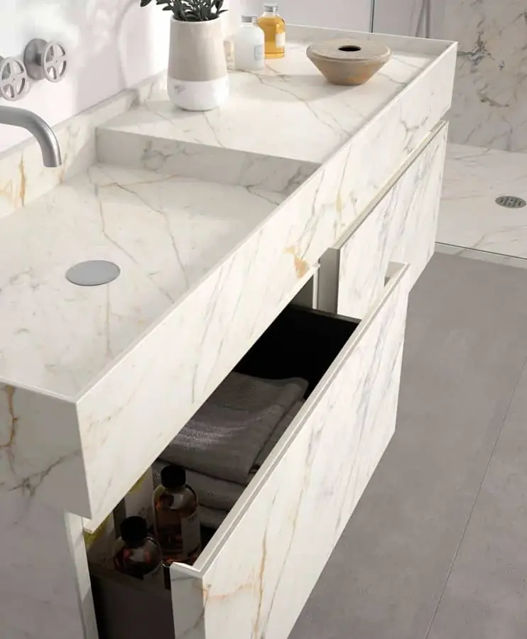
Muebles de bañoMueble de baño revestido en porcelánico- colección Leo – Madero atelier
Madero Atelier pone de manifiesto su expertise tecnológico con su nueva colección Leo: dos soluciones en porcelánico para mobiliario de baño que permiten un revestido perimetral o total.
Gracias a uniones ingletadas a 45° y continuidad de veta, se consigue un efecto continuado de alta precisión.
La opción de revestimiento total encapsula el mueble en piedra sinterizada, aportando durabilidad, resistencia y un acabado natural.
La vertiente perimetral, combina acabados entre porcelánicos y lacas, permitiendo crear muebles únicos y personalizados.
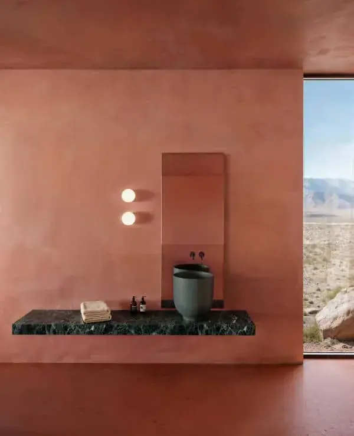
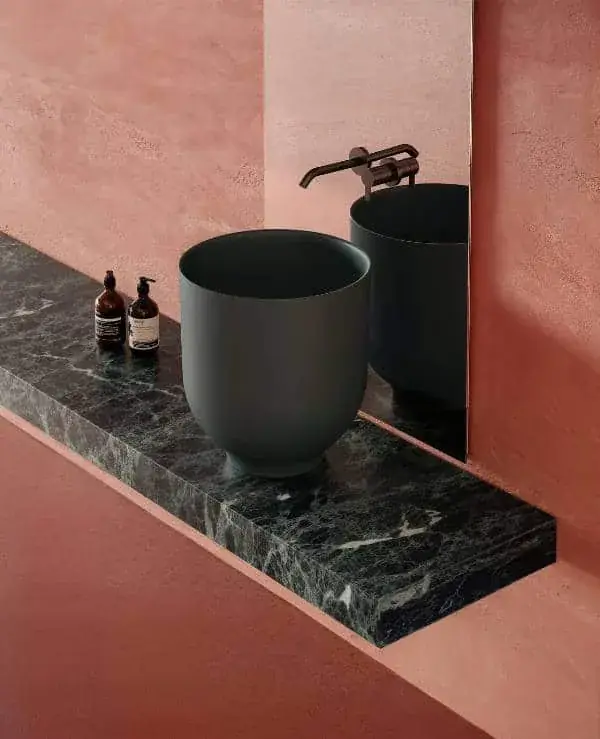
Muebles de bañoNuevas encimeras STRATO en mármol - Inbani
STRATO es un extenso programa modular de formas minimalistas que permite adaptar cada proyecto al espacio deseado, siendo una de las colecciones más versátiles y prácticas de nuestro catálogo. Con soluciones para distintas tipologías de baño, su diseño preciso y funcional permite crear composiciones libres, elegantes y perfectamente integradas.
Como novedad, incorporamos a la colección las encimeras simples STRATO en mármol natural, disponibles en siete variedades que aportan textura, sofisticación y carácter al conjunto:
Diseñadas para instalación suspendida e independiente, estas encimeras presentan un volumen sólido y refinado que transmite equilibrio entre la nobleza de la piedra y la levedad formal del diseño. STRATO crece sin perder su esencia: modularidad inteligente, estética atemporal y ahora, la fuerza expresiva del mármol.
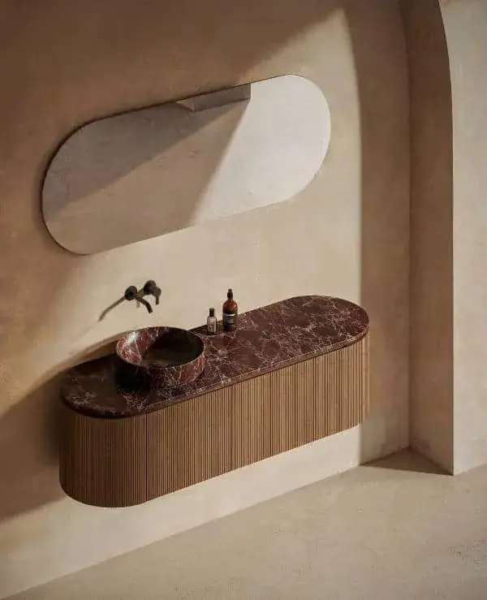
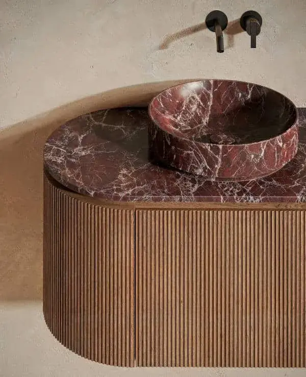
Muebles de bañoMobiliario para baños Grate Round – Inbani
Conjunto de mobiliario para baño que combina módulos suspendidos en madera natural, lavabos Arc40 con tapa, mármol Rosso Lepanto y detalles metálicos.
Incluye bancos EDGE independientes, espejos ovalados con iluminación LED y grifería CODE, permitiendo composiciones elegantes y coherentes.
Su estética evoca líneas de los años 50 con un enfoque contemporáneo. Pensada para proyectos residenciales o de hotelería que priorizan materiales nobles, diseño cuidado y una experiencia de usuario premium sin renunciar a la funcionalidad.
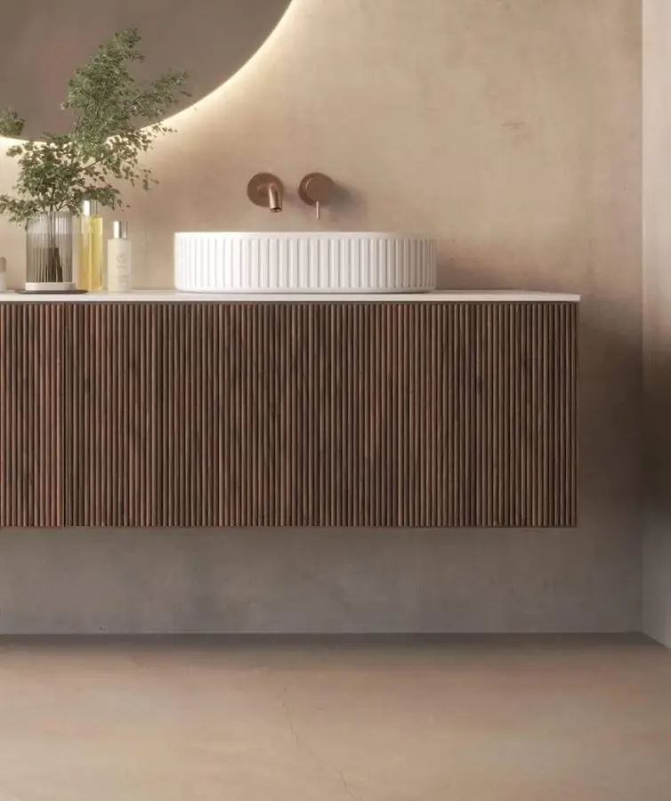
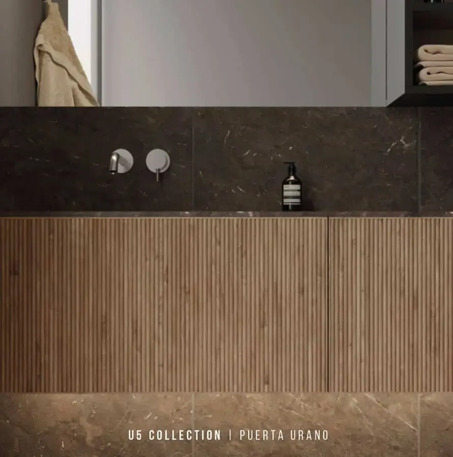
Muebles de bañoMobiliario para baño Urano – Unibaño
Mueble para baño con frente alistonado redondeado en diferentes acabados en madera natural.
Garantía de durabilidad y mantenimiento óptimo, la elección de sus materiales hace de esta pieza una opción elegante para proyectos que buscan aportar calidez al espacio y grandes prestaciones.
Con opciones de apertura con sistema push o tiradores metálicos, su construcción está pensada para una integración fácil en baños versátiles, tanto contemporáneos como clásicos.
Una apuesta por la innovación, tecnología y altas calidades para cumplir con los altos estándares del sector.
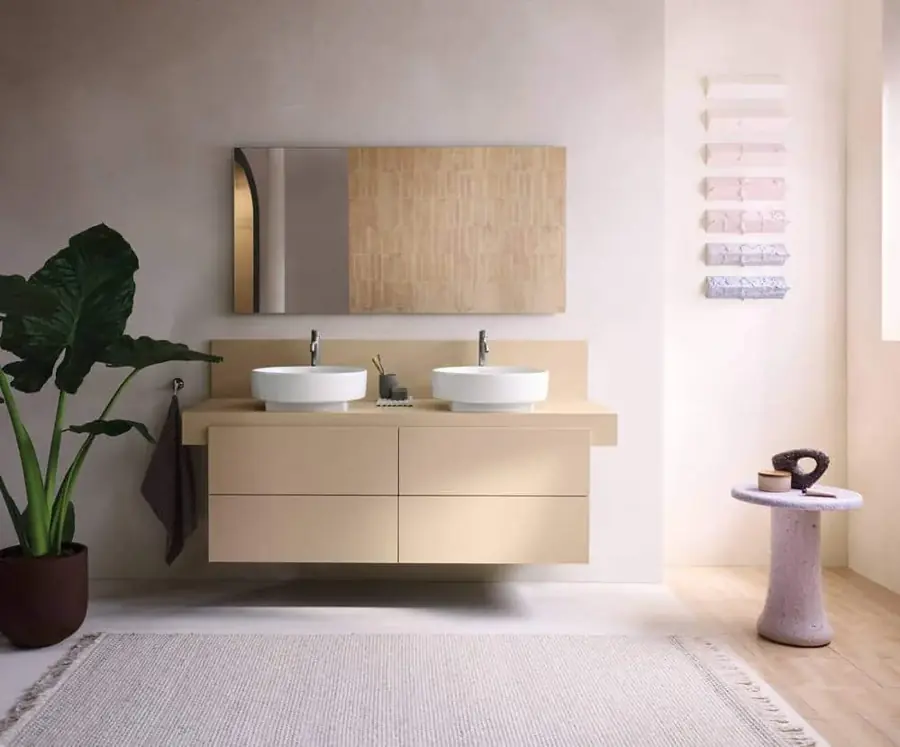
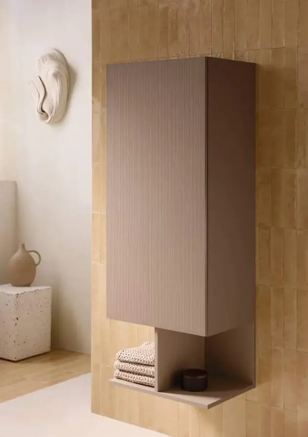
Muebles de bañoMuebles de baño Balcoon – Duravit
Colección exclusiva de muebles para baño premium diseñada por Patricia Urquiola. Balcoon propone piezas con volúmenes arquitectónicos, frentes acanalados y una paleta cromática inspirada en la naturaleza.
Disponibles en configuraciones cerradas, semiabiertas o asimétricas, con consolas de 800 a 1600 mm para adaptarse a todo tipo de proyectos.
Las superficies, hechas con materiales naturales, incluyen texturas como lava o basalto que aportan carácter y durabilidad.
Un diseño funcional con detalles singulares propio de baños de altas calidades a un precio más asequible.
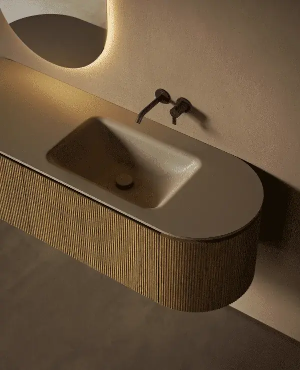
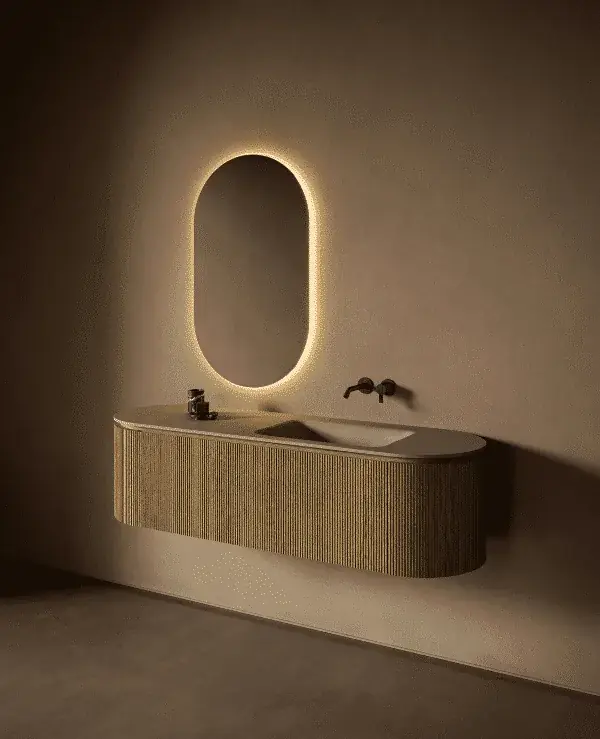
Muebles de bañoMódulos suspendidos Grate Round - Inbani
Colección de mobiliario para baño caracterizada por su sistema suspendido de cajones con estructura en madera S3 509 Shadow Wild Oak y frente ranurado vertical.
Su fijación a pared libera espacio al suelo, favoreciendo la limpieza visual y funcional. Incorpora lavabo D1 en Solid Surface UHS Havana 243 y permite integración con grifería empotrada. Ideal para baños donde se prioriza ligereza, accesibilidad y ritmo compositivo.
Compatible con soluciones auxiliares como el espejo retroiluminado STRATO y la mesa auxiliar de apoyo NORM TABLE de la misma casa.
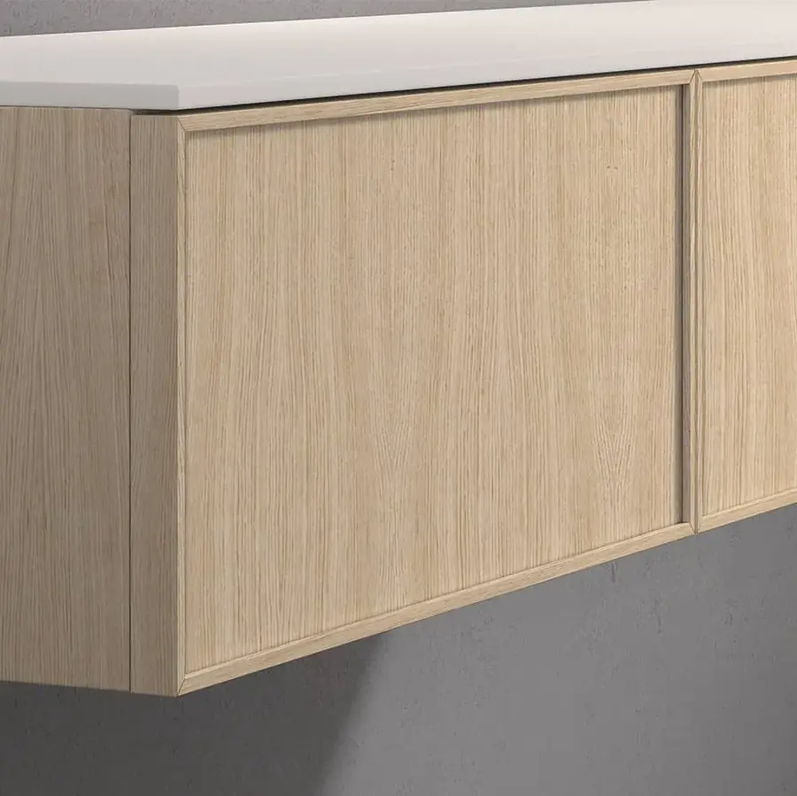
Muebles de bañoPersonaliza el frente del mobiliario – Kyrya
El diseño del frente define el carácter del mobiliario y marca el tono del espacio. Los frentes de Kyrya ofrecen hasta 5.000 opciones de combinación para proyectos que buscan personalización sin límites.
Disponibles en 5 diseños – Liso, Frame, Époque, Glass y Strip- se adaptan a distintas necesidades estéticas y arquitectónicas.
Desde superficies lisas minimalistas y alistonados en madera o metal, hasta marcos clásicos fresados o vitrinas con cristal fumé. La colección permite múltiples acabados, sistemas de apertura y estructuras compatibles.
- Muebles de baño
Mobiliario de baño Sade - Unibaño
Colección en madera con frente alistonado horizontal, ideal para aportar profundidad visual y calidez al baño.
Disponible en múltiples acabados y a medida, se integra fácilmente en proyectos de estilo escandinavo o contemporáneo.
La iluminación integrada en su módulo cerrado refuerza su carácter funcional y elegante. Una opción versátil para baños que buscan diseño atemporal y orden visual, sin renunciar a la personalidad de los materiales nobles.
- Muebles de baño
Mobiliario de baño Heritage en Cristal Estriado - Inbani
Heritage de Inbani fusiona la esencia de la arquitectura clásica con un enfoque contemporáneo. Su diseño, marcado por volúmenes contundentes y líneas verticales, recuerda la majestuosidad de la estética tradicional griega, reinterpretándola con un estilo moderno.
Una nueva línea de mobiliario en Cristal Estriado que aporta profundidad y movimiento al baño, jugando con la luz que incide en sus ranuras. Una propuesta que equilibra tradición y vanguardia, transformando cada pieza en un elemento artístico que enriquece todos los espacios.
- Muebles de baño
Mueble para el baño Colección Obi – Madero Atelier
Obi es la nueva colección de Madero Atelier de mobiliario para baño, una declaración de equilibrio y sofisticación, en la que la forma y la funcionalidad convergen para convertir la estancia en un santuario de tranquilidad.
La marca indaga en la esencia del diseño mediante líneas nítidas y una integración fluida con el espacio, logrando una continuidad visual entre los muebles y el entorno.
Obi se ofrece en versiones lacadas, laminadas y de madera. Tres alternativas minimalistas con algo en común, la percepción de estabilidad y armonía que proyectan.
- Muebles de baño
Muebles para el baño Colección Leo Revestido – Madero Atelier
La colección Leo Revestido de Madero Atelier redefine el concepto de mobiliario para baño, transformando cada pieza en un objeto de lujo atemporal.
La experiencia y maestría de la casa en la manipulación de mármol y porcelánico, junto a la innovación tecnológica, ha permitido crear esta línea de revestimientos impecable con ingletes a 45 grados, garantizando un acabado continuo.
Disponible en piedras y materiales selectos, Leo Revestido es la fusión perfecta entre diseño, elegancia y funcionalidad.
- Muebles de baño
Colección en mármol Scala – Inbani
La marca referente en diseños de vanguardia para baño, presenta su nueva línea “Scala”, una oda a la sofisticación que usa el mármol como protagonista.
Esta colección modular ofrece encimeras y lavabos completamente personalizados, elaborados a medida para adaptarse a cualquier espacio y construir distintos escenarios.
Scala transforma cada pieza en una obra única que destaca por la riqueza y autenticidad de sus materiales. Con su enfoque artesanal y versátil, la colección convierte el baño en un refugio de lujo y distinción.
- Muebles de baño
Muebles y espejos para baños. Colección Theo – Cerámicas Cielo
Theo es la nueva propuesta de muebles y espejos para baño en cerámica de Cielo. Con grandes referencias al movimiento artístico De Stijl, la colección es un balance entre fuerza y simplicidad.
Un constante juego de equilibrio entre líneas minimalistas y colores sólidos que aportan un gran protagonismo a las piezas en el conjunto del baño.
Todos los elementos de la colección están disponibles en varios acabados y tonalidades, pero además se pueden configurar de distinta manera resultando un proyecto de lo más moldeable que consigue conservar su genuinidad en cada hogar.
- Muebles de baño
Baños pequeños o de cortesía D-Code - Duravit
Diseñada por Sieger Design, D-Code es la solución perfecta para baños pequeños o de cortesía. Su estilo contemporáneo y tonalidades discretas ayudan a maximizar el espacio manteniendo un equilibrio entre elegancia y practicidad.
Los muebles de la colección ofrecen soluciones de almacenamiento inteligentes adaptándose a las formas y alturas de cada estancia, mientras que los lavabos y sanitarios, con su diseño de esquinas redondeadas, aportan armonía y versatilidad.
Caracterizada por sus formas suavizadas, las piezas de D-Code redefinen el diseño funcional de los baños a un precio de lo más asequible.
- Muebles de baño
Baños compactos contemporáneos Sivida - Duravit
Sivida da nombre a la nueva colección de muebles y accesorios para baños de Duravit. Diseñada por Philippe Starck y Christian Werner, esa línea está pensada para resolver las necesidades del día a día de cualquier vivienda.
Especialmente ideada para lavabos de pequeñas dimensiones, Sivida incluye mobiliario con gran capacidad de almacenamiento sin renunciar a la elegancia y la estética. Hecha a partir del mineral DuroCast, la colección se caracteriza por su aterciopelada apariencia y el bajo mantenimiento requerido.
- Muebles de baño
Elegantes muebles de baño Colección Halter - Madero Atelier
Madero Atelier cautiva con su exclusiva colección para baños Halter, una combinación de muebles diseñados con los materiales más sofisticados del mercado, trabajados al detalle y pensados para dar un toque único a la estancia.
Sin renunciar a la comodidad, Halter representa la elegancia y la estética. La belleza de sus acabados logra crear un ambiente sereno y en armonía, proporcionando una experiencia sensorial placentera.
La colección, diseñada en mármol, piedra y madera, permite combinar varios módulos creando espacios genuinos que se adaptan a todas las necesidades y preferencias.
- Muebles de baño
Colección muebles de baño U6 – Unibaño
Como una revolución, así se presenta la colección U6 de muebles para baño de Unibaño. Una serie con un estilo contemporáneo industrial, caracterizada por estructuras metálicas que, en combinación con la madera, proporcionan calidez a la estancia.
Con grandes referencias a los almacenes de la ciudad de Nueva York, el uso del metal aporta durabilidad y adaptabilidad a la colección, resultando perfecta tanto para viviendas como para hoteles.
Ideales para aquellos clientes que buscan un baño atemporal, U6 se presenta en forma modular con varios accesorios personalizables como estantes y cajones con los que hacer combinaciones genuinas.
- Muebles de baño
Nuevos acabados colección muebles de baño Moode – Rexa Design
Rexa Design presenta su colección de mobiliario para el baño «Moode», una gama flexible y apta para cualquier estilo debido a la diversidad de materiales que emplea.
La mezcla de la madera acanalada en los muebles, que aporta textura, sumado al cristal espejado, perfecto para proporcionar profundidad, y el clásico mármol de los lavabos, convierten a Moode en un proyecto contemporáneo en armonía con los detalles más tradicionales.
Cada una de sus piezas se encuentra en varias tonalidades, desde las más neutras a las más vibrantes, permitiendo una combinación 100% personalizada.
- Muebles de baño
Muebles baño de madera U4 Collection, Wood Design – Unibaño
Wood Design apuesta por la madera como protagonista para su nueva colección de muebles para baño “U4 Collection”.
Con un estilo entre contemporáneo y equilibrado, sus piezas preservan la esencia de este material tan noble y versátil. Gracias a este diseño conservador, la gama se convierte en muy buena opción para aquellos que no quieran arriesgar, pero sí estar a la última.
Disponible en 5 acabados distintos, U4 Collection realza la elegancia de toda estancia combinando con el resto de elementos de la decoración.
- Muebles de baño
Colección para baños Tonalita – Catalano
Catalano sorprende con su nueva colección para baños “Tonalita”, inspirada en la naturaleza, con una estética genuina y de lo más versátil.
Gracias al diseño de sus piezas y las tonalidades de sus modelos, la gama combina con cualquier estilo decorativo. En colores tierra que van desde el beige hasta el negro, pasando por el blanco y el verde agua, Tonalita aporta armonía y calma a cualquier estancia.
Su condición flexible permite jugar con otros materiales como la madera, la piedra o el metal.
- Muebles de baño
Puerta alistonada para muebles de baño m4 - u3 collection
Transforma tu baño con la nueva colección de puertas alistonadas para muebles de baño “U3 Collection” de Unibaño, un toque de diseño único perfecto para que buscan un estilo más audaz y personalizado.
Y es que las rayas han vuelto con fuerzo a la decoración de interiores, además de aportar modernidad a tu baño, la versatilidad que ofrece la variedad de sus modelos permite infinitas posibilidades de configuración.
Mientras que la disposición en forma vertical estiliza visualmente el baño haciéndolo parecer más alto, las opciones horizontales lo ensancharán.
- Muebles de baño
Colección para baños Edge en Grey Wild Oak – Inbani
La nueva colección Edge de Inbani es una de las más distinguidas de su catálogo. Su variedad hace que sea la opción perfecta para combinar todas las piezas del baño: módulos suspendidos, armarios, toalleros, una bañera con step, encimeras, bancos, taburetes y accesorios.
En concreto, su modelo más elegante Grey Wild Oak 555, confluye en una composición de varios elementos que ayudan a crear un ambiente de sobriedad y modernidad en tonos negros.
Cada pieza destaca por su diseño minimalista y bordes acampanados, ofreciendo múltiples combinaciones y una integración perfecta en cualquier espacio.